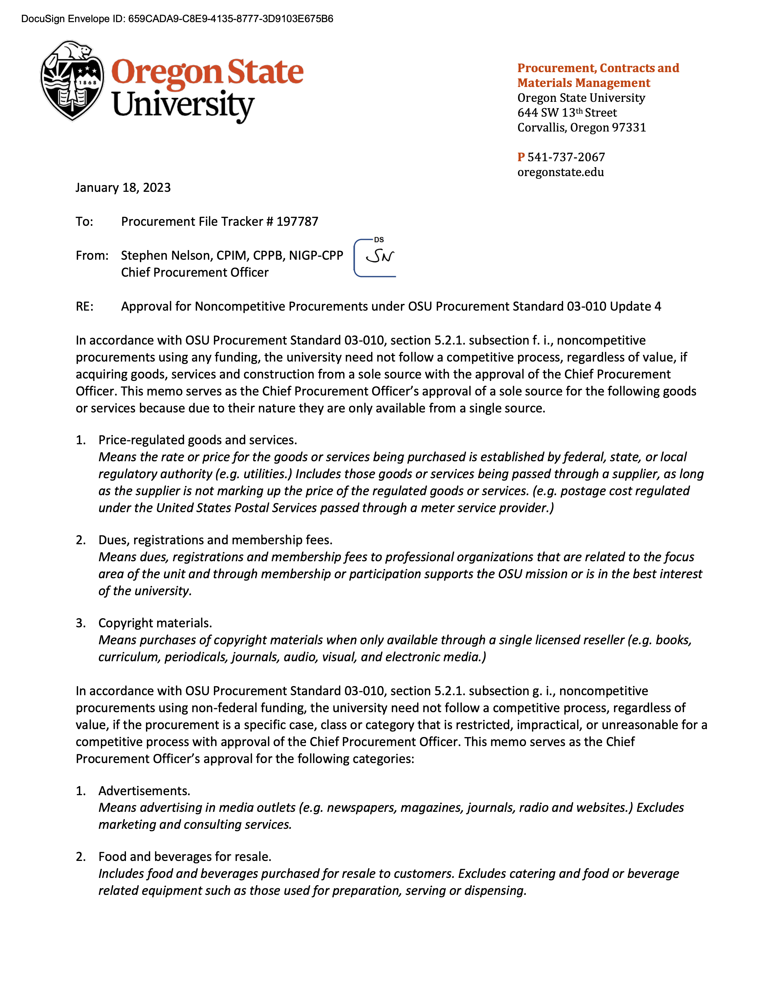

March 7, 2025
THE COMPLIANCE FLAG
Kyle Bjornstad emails OSU compliance officer Diana Ulrey requesting a targeted list of student-athletes by major, writing he was trying "to help BSP" (Beaver Sports Properties). View source document ↗
March 13, 2025
THE NCAA CONCERN
Diana Ulrey emails Scott Barnes flagging the issue directly:
EMAILDiana Ulrey → Scott Barnes
The NCAA concern is that, through his duties contracting with OSU, recruit names will be shared from coaches.
Batch 3 · View source document ↗
March 30, 2025
THE SHUTDOWN NOTICE
Kyle Bjornstad emails Scott Barnes and OSU leadership: he intends to shut down the Dam Nation Collective no later than July 1, 2025.
April 1, 2025
PERSONAL SERVICES CONTRACT
Kyle signs a Personal Services Contract with OSU. The contract does not include any title. No "General Manager." No named position. This becomes important later.
April 2, 2025
FIRST CONTACT
Three days after Kyle's shutdown notice, Brent Blaylock texts Rob Sine at Blueprint. Not Kyle. Not procurement. Not a competitive search. One text, to one company, from a man invoking a prior relationship.
SMSBrent Blaylock → Rob Sine (Blueprint)
Rob, this is Brent Blaylock (formerly of Arizona, now at Oregon State). It's been awhile since we last connected, I've been impressed watching Blueprint's growth since those early days.
We are exploring transitioning our collective to a different management and I wanted to see if that is something you guys would be interested in operating. If so, do you have some time to discuss?
Batch 4, p.19 · View source document ↗
We are exploring transitioning our collective to a different management and I wanted to see if that is something you guys would be interested in operating. If so, do you have some time to discuss?
No evidence in the production indicates OSU contacted any other vendor.
April 3, 2025
COMPLIANCE MEETS KYLE
Diana Ulrey emails Brent Blaylock: Scott Barnes wants weekly meetings with Kyle. Ulrey is also trying to understand how Kyle wants to operate, and circulates House settlement talking points.
April 16, 2025
FOURTEEN DAYS
Blueprint delivers a recommendation deck to OSU. Two weeks from first text to formal pitch. No competing presentations.
April 22, 2025
HOUSE IMPLEMENTATION
Diana Ulrey emails Brent Blaylock about scheduling a meeting with Kyle to cover "the basics of the settlement" and "to ask a few questions so that I better understand how he is wanting to operate."
June 13, 2025
SECOND THOUGHTS
In the days before the Lockerverse proposal, Kyle informs both Barnes and Blaylock that his interactions with Blueprint have been "both underwhelming, and unprofessional" and that he has major concerns about moving forward with them.
June 14, 2025, 4:19 PM
THE OFFER THEY BURIED
Lockerverse emails Kyle a formal proposal to acquire DNC:
EMAILMarcus Rance (Lockerverse) → Kyle Bjornstad
Lockerverse is prepared to offer Oregon State a two-year guaranteed partnership valued at $288,000 per year, with the payments made to OSU within the first quarter of each contract year.
Revenue generated beyond $288,000 each year to be split 75% to Oregon State and 25% to Lockerverse.
Batch 3, p.6-8 · View source document ↗
Revenue generated beyond $288,000 each year to be split 75% to Oregon State and 25% to Lockerverse.
June 14, 2025
THE FORWARD
Kyle forwards the Lockerverse proposal to Barnes that evening. He also tells Barnes that Blueprint informed him they don't need Dam Nation to move forward with Oregon State and were willing to start a collective from scratch. Barnes gives Kyle 24 hours to negotiate a deal with Lockerverse.
June 15, 2025, 8:45 AM
UNDER 18 HOURS
Barnes responds. One line. No follow-up questions. No request for a presentation. No consultation with procurement.
EMAILScott Barnes → Kyle Bjornstad
This doesn't come close to the deal we have. Not worth exploring at all for our perspective. We would like to move forward with Blue print with your blessing.
Batch 3, p.1-2 · View source document ↗
Lockerverse Offer
Lockerverse → $288K/yr → OSU
Plus 75% of revenue above $288K flows to OSU
Blueprint Contract (Executed)
OSU → $280K-$287.5K/yr → Blueprint
Plus Blueprint retains 75% of revenue above $750K target
The money flows in opposite directions.
BPSE-OSU Services Agreement, Page 4 (Fee Structure)

Annual Management Fee, Contract Administration Fee (1.25%), and Fundraising Bonus: BPSE retains 75% of Net Direct Revenue between $750K and $1.15M; 50% above $1.15M. Batch 1 · View full contract ↗
READ THAT AGAIN.
June 16, 2025
BARNES CONFIRMS RECEIPT
Barnes texts Kyle confirming he received the email, and says he asked Brent Blaylock to call Kyle.
June 16, 2025
"FACILITATING A DEAL"
Blaylock texts Kyle:
SMSBrent Blaylock → Kyle Bjornstad
Ok. Scott and I are here to help with facilitating a deal getting done with Blueprint that works for you. 100% respect that it is your company and fully your decision...
Batch 4, p.14 · View source document ↗
June 17, 2025
"RADIO SILENCE"
An SMS from Blaylock references Kyle's attorney, a period of "radio silence" from Blueprint, and that Kyle and his attorney "were then contacted by another company to take over the collective."
June 17, 2025, 7:44 PM
"A LEGITIMATE THREAT"
Blaylock texts Blueprint's representatives directly:
SMSBrent Blaylock → [Blueprint representatives]
I understand this is your business as well and your negotiation. So not here to spend your money, but there's some value for all involved on this not happening. And he clearly has a legitimate threat. That being said, if Kyle gets a little bit more out of the deal with Blueprint so that he feels better about all this, then so be it. We could potentially find some workarounds in our partnership with you to help you recoup.
Batch 4, p.14 · View source document ↗
June 17, 2025, 9:10 PM
SAME DAY
Ninety minutes later:
SMSScott Barnes → Brent Blaylock
We need to think about offering Kyle $ to keep what we have. Maybe meet him half way.
Batch 4, p.14 · View source document ↗
June 19, 2025
"MULTIPLE ENTITIES"
SMSBrent Blaylock → [REDACTED]
...he and I have discussed the significant concerns about the negative impact to all parties involved if there are multiple entities in the market. We are open to hearing what we can provide to get both sides back in agreement.
Batch 4, p.14 · View source document ↗
72 hours. A competing offer arrives. Barnes kills it in one line. Blaylock coaches Blueprint. Barnes discusses paying Kyle off. Blaylock warns of consequences. The contract was subsequently approved through a sole-source procurement exception.
OSU Sole-Source Procurement Approval (CPO Memo)

OSU Standard 03-010, §5.2.1(g)(i), Item 6: Noncompetitive exception for "specific intercollegiate athletic activities." A ~$850K+ contract approved as sole-source while a competing offer sat on the AD's desk. Batch 1 · View CPO memo ↗
June 20, 2025
HOUSE IMPLEMENTATION
Internal "House implementation" agenda includes a line item: "Point for communication with Kyle."
July 15, 2025
THE ACQUISITION
Dam Nation Collective is sold to Blueprint. An SMS from that day:
SMS[REDACTED] → Brent Blaylock
All, Confidential... Just an FYI that the Dam Nation acquisition was finalized today. As we've discussed, please make sure to include me in the announcement/press release planning.
Batch 4, p.10 · View source document ↗
July 16, 2025
SHORT CALLS WITH BLUEPRINT
SMS records show coordination of "5-7 minute" calls with Blueprint and scheduling adjustments around them.
July 17, 2025
AUTHORITY LIMBO
Two days after the acquisition:
SMS[REDACTED] → Brent Blaylock
I'm technically not allowed to answer on behalf of DNC anymore... So I'm hoping there isn't a huge lag in timing.
Batch 4, p.8 · View source document ↗
A separate SMS: "Where are we with the blueprint agreement. We are ready to Announce."
July 22, 2025
FACILITIES AND RATES
Brent Blaylock emails about facility use, treating Blueprint/Dam Nation as "associated" with OSU and discussing standard facility rates for NIL campaign use.
August 20, 2025
THE PRESS RELEASE
OSU, Blueprint, and Kyle issue a joint press release announcing the Blueprint partnership. Kyle is named General Manager. Barnes expressed excitement about retaining him. Remember this for later.
September 30, 2025
SPORTICO PUBLISHES
Sportico publishes the financial terms of the BPSE-OSU contract. The public sees the numbers for the first time.
October 1, 2025
THE PRESSURE CALL
The next day, Barnes calls Kyle. Here is what Kyle documented:
EMAILKyle Bjornstad → Scott Barnes · Oct 19
...on that phone call, with other OSU employees present, including Brent, you presented the idea that I tell the media that nobody asked/pressured me to sell DNC, and nobody asked/pressured me to sell it to BPSE.
...after our conversation on October 1, 2025, I knew that I could not continue to serve as General Manager while maintaining my integrity.
Batch 3, p.3-4 · View source document ↗
...after our conversation on October 1, 2025, I knew that I could not continue to serve as General Manager while maintaining my integrity.
October 2, 2025
"NO OPTION OTHER THAN BLUEPRINT"
Brent Blaylock appears on the Dam Podcast:
PUBLICBrent Blaylock → Dam Podcast
"Once he [Kyle] sold Dam Nation to Blueprint, there was no option other than Blueprint."
Batch 3 · View source document ↗
October 2, 2025
KYLE RESIGNS
Kyle Bjornstad submits his resignation as General Manager of Dam Nation Collective.
October 3, 2025
"MULTIPLE ENTITIES"
Brent Blaylock tells BeaversEdge:
PUBLICBrent Blaylock → BeaversEdge
"When [Kyle] decided to evaluate the options of transitioning ownership for that, I believe he talked to multiple entities on that. That was my impression at the time, that he had at least a couple he was reviewing."
Batch 3 · View source document ↗
The records show Blaylock himself initiated the only vendor contact. Kyle found Lockerverse independently.
October 13, 2025
THE PUBLIC NARRATIVE
Barnes tells The Oregonian:
PUBLICScott Barnes → The Oregonian
"...we have an outside entity that's taking control of the Dam Nation Collective that would have been left for dead."
Batch 3 · View source document ↗
A $288,000/year guaranteed offer was sitting on his desk. He dismissed it in one line.
PUBLICScott Barnes → The Oregonian
"I think the General Manager position is a misnomer."
Batch 3 · View source document ↗
The August 20 press release, which Barnes approved, named Kyle as General Manager.
October 14, 2025
REPEATS ON DAM PODCAST
Barnes repeats the "misnomer" claim on the Dam Podcast with Angie Machado.
October 19, 2025
KYLE'S REBUTTAL
Kyle sends the "Public Comments" email to Barnes. It includes this:
EMAILKyle Bjornstad → Scott Barnes
I have been told, after the fact, that there was at least one other entity that discussed/pitched the idea of acquiring DNC with OSU officials, and that entity was never presented to me. Another major issue.
Batch 3, p.2 · View source document ↗
I have independently confirmed this. At least one other entity, a well-known name in the college sports infrastructure space, made a pitch to OSU leadership before the deal closed. An OSU official present had hoped it would be stronger so the university would have a viable alternative to Blueprint. It wasn't. Kyle was never told. The sole-source procurement was approved anyway.
EMAILKyle Bjornstad → Scott Barnes
It is clear that you and Brent are attempting to make me the scapegoat for the deal with BPSE, a deal that you wanted all along, and negotiated prior, during, and after the close of the DNC acquisition. I even negotiated a better deal with Lockerverse on your behalf, and presented the offer to you. Even so, you would not even explore a potential deal with Lockerverse.
Batch 3, p.4 · View source document ↗
October 22, 2025, 7:13 AM
THE PRIVILEGE PROBLEM
EMAILScott Barnes → Brent Blaylock
Subject: Fwd: Public Comments Privileged and confidential
This was sent to me by Kyle. I read it for the first time on Monday. Let's discuss.
Batch 3, p.1 · View source document ↗
This was sent to me by Kyle. I read it for the first time on Monday. Let's discuss.
The production shows a large redaction block after Barnes received Kyle's email, consistent with a forward to legal counsel (legitimately privileged). But then Barnes forwarded it again to Blaylock alone, without counsel on the thread. That communication is not privileged. It is an internal administrative communication subject to public records disclosure. Barnes stripped the privilege while keeping the label.